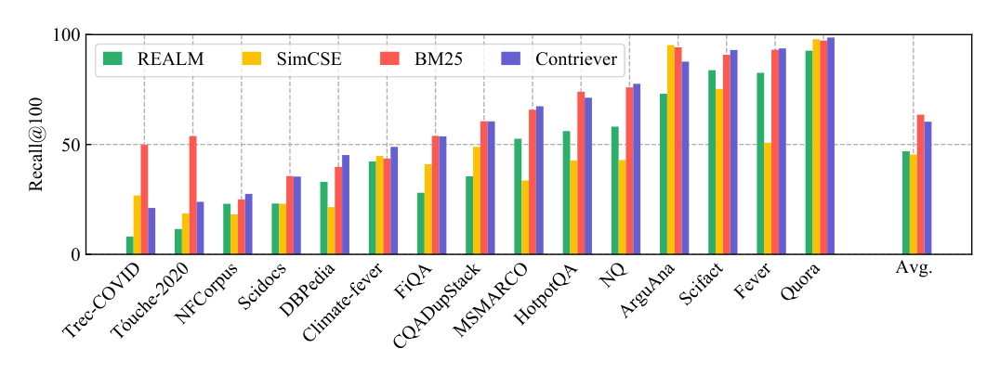
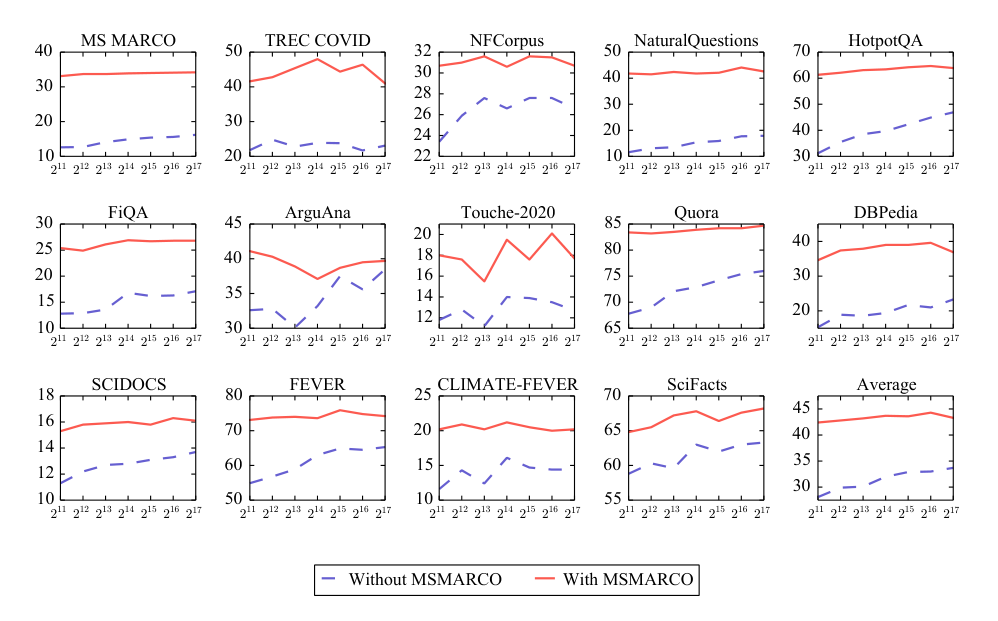

原文: arXiv:2112.09118（TMLR 2022） 说明: 本文为论文全文中文技术展开，公式编号与原文一致；图片自 arXiv HTML / PDF 抽取，caption 中译；表格数值保留原始数字，仅表头/说明中译。
预印本信息： arXiv:2112.09118 [cs.IR]，2021 年 12 月首次提交，2022 年 8 月发表于 TMLR。
代码与模型： https://github.com/facebookresearch/contriever
用对比学习做无监督稠密信息检索（Unsupervised Dense Information Retrieval with Contrastive Learning）¶
作者： Gautier Izacard♦,♣,♥ · Mathilde Caron♦,♥,♠ · Lucas Hosseini♦ · Sebastian Riedel♦,△ · Piotr Bojanowski♦ · Armand Joulin♦ · Edouard Grave♦
单位： ♦ Meta AI Research；♣ 巴黎高师，PSL 大学；♥ Inria；♠ 格勒诺布尔阿尔卑斯大学；△ 伦敦大学学院
邮箱： {gizacard, mathilde, hoss, sriedel, bojanowski, ajoulin, egrave}@fb.com
摘要（Abstract）¶
近年基于神经网络的稠密检索（Dense Retrieval, DR） 迅速崛起，成为传统基于词频稀疏检索的替代。它们在大量训练数据可得的任务上取得 SOTA，但在没有标注数据的新领域上表现不佳，往往输给不需要监督的词频类方法（如 BM25）。多语场景下的问题更严重：除英文外的大规模标注数据几乎不存在。
作者提出用**对比学习（Contrastive Learning）**训练无监督稠密检索器 Contriever，探索无监督方法的能力边界。三个主要贡献：
- 对比学习作为无监督检索训练：在 BEIR 的大部分数据集上，Contriever 的 Recall@100 与 BM25 相当；
- 少样本（Few-shot）场景优于迁移学习：在少量领域数据下，Contriever 比"用 MS MARCO 训练的迁移模型"更好；
- 作为预训练用于微调：先做对比预训练、再在 MS MARCO 上微调，能在 BEIR 上取得强性能。此外，作者训练了多语版本 mContriever，在 Mr. TyDi 上取得 SOTA。
代码与预训练模型开源于 facebookresearch/contriever。
1 引言（Introduction）¶
问题动机。信息检索（Information Retrieval, IR）是许多 NLP 任务（问答、开放域对话、事实核查、机器阅读等）的基础环节。传统 IR 依赖词法匹配：把文档与查询表示为高维稀疏向量（词表维度），用 BM25 类方法打分。稠密检索则通过神经网络将查询与文档映射到低维稠密向量空间（bi-encoder 双塔），用内积或余弦度量相关性；配合 FAISS 等近似最近邻（Approximate Nearest Neighbor, ANN）库可在毫秒级完成大规模检索（Karpukhin et al., 2020）。
尽管稠密检索在有大量标注（如 MS MARCO 88 万训练查询）时表现优异，作者指出两个尚未解决的问题：
- 零样本（Zero-shot）泛化差：迁移到新领域时，稠密检索经常输给完全不需监督的 BM25（Thakur et al., 2021）。
- 多语场景数据稀缺：非英语的高质量标注检索数据集极少，多语稠密检索基本无从谈起。
一个自然的问题：能不能无监督地训一个稠密检索器，达到与 BM25 相当的水平？作者的答案是——可以，方法是对比学习。他们指出，虽然此前有工作用 Inverse Cloze Task, ICT（Lee et al., 2019）预训练稠密检索器，但结果不如 BM25。而对比学习在视觉自监督（Chen et al., 2020; He et al., 2020）中已证明能学到强特征，值得系统性地应用到检索。
本文贡献：
- 无监督对比学习训出的稠密检索器可与 BM25 在 BEIR 的 Recall@100 上打平；
- 在少样本设置下，Contriever 优于从大数据集迁移的模型；
- 作为预训练 + MS MARCO 微调，Contriever 在 BEIR 上取得 SOTA；
- 多语版 mContriever 在 Mr. TyDi 上取得 SOTA；
- 消融研究表明，独立随机裁剪（independent random cropping） 比 ICT 更适合稠密检索预训练。
2 相关工作（Related Work）¶
词法检索（Term-frequency IR）。传统方法把文档/查询视作稀疏向量，元素为词的权重。TF-IDF（Jones, 1972）与 BM25（Robertson et al., 1995）是经典代表，但都依赖近似词面匹配，词法不一致时失效。潜在语义分析（Latent Semantic Analysis, LSA）用低维稠密向量作为替代（Deerwester et al., 1990）。
神经网络 IR。Huang et al. (2013) 用深度词袋模型，独立编码查询与文档、点积计算相关性、并用点击数据端到端训练。此后被 CNN（Shen et al., 2014）与 RNN（Palangi et al., 2016）扩展。Nogueira & Cho (2019) 首次把 BERT 用作 cross-encoder（查询-文档联合编码），在 MS MARCO 上取得显著提升，但只能用于重排，因为要 online 编码。Gillick et al. (2018) 首次研究把连续检索器作为召回层替换 BM25 的可行性；Karpukhin et al. (2020) 的 DPR 用 BM25 挖 hard negative + bi-encoder 结构，配合 QA 数据（NQ、TriviaQA）取得强结果。ANCE（Xiong et al., 2020）进一步引入训练中挖掘 hard negative。ColBERT（Khattab & Zaharia, 2020）用 token 级 late interaction 兼顾精度与效率。
NLP 自监督。word2vec（Mikolov et al., 2013）以来，自监督学习一直是学词/句表征的核心工具。ICT（Lee et al., 2019）为预训练检索器提出逆完形填空：随机采样一个 span 作 query、上下文作 key。REALM（Guu et al., 2020）与 RAG（Lewis et al., 2020）把 bi-encoder 检索器嵌入端到端预训练。SBERT（Reimers & Gurevych, 2019）用 Siamese 网络在 NLI 数据上训 BERT 得句向量。与本文最接近的是 SimCSE（Gao et al., 2021）——用 Dropout 造正对做对比学习；同期的 coCondenser（Gao & Callan, 2021）与本文思路相通，都主张对比学习是稠密检索训练的良方。
3 方法（Method）¶
3.1 双编码器架构（Bi-encoder）¶
给定查询 \(q\) 与文档 \(d\)，检索器需要一个可以在离线预先编码所有文档并在线上快速检索的架构。双编码器（bi-encoder）满足这一要求：查询与文档各自独立过同一个编码器 \(f_\theta\)，相关性用点积计算：
作者的实现使用 BERT-base uncased，共享编码器（同一个 \(\theta\)），\(f_\theta\) 输出取最后一层 hidden state 的平均池化。共享编码器（同一个塔）比 DPR 那样的双塔（各自参数）在零样本迁移与少样本上更稳，同域内表现相当。
3.2 对比损失（Contrastive Loss）¶
无监督训练需要构造伪相关对。给定 query \(q\)、其正例 \(k^+\)、\(K\) 个负例 \(\{k_i\}_{i=1..K}\)，对比 InfoNCE 损失为：
\(\tau\) 为温度。它鼓励正对分数大、负对分数小，等价于"从 \(\{k^+, k_1, \dots, k_K\}\) 里找出正例"的 \((K+1)\) 分类任务。
3.3 从一篇文档构造正对（Positive Pairs）¶
对比学习的关键设计之一。作者比较两类做法：
Inverse Cloze Task（ICT）。给一段文本 \((w_1, \dots, w_n)\)，随机选 span \((w_a, \dots, w_b)\)，将 span 作为 query，把 span 的补集（前后剩余部分）作为 key。ICT 生成的 query 与 key 互斥、且 query 通常较短，与 key 分布不同。Lee et al. (2019) 的原始实现里 span 是一整句，且10% 概率保留 span 在 key 中以鼓励词法匹配。
Independent Cropping（独立随机裁剪）。两次独立采样 span 作为 \((q, k^+)\)。两个 span 可能重叠。这样与视觉里的 random cropping 一致（同一图裁两次得两个 view）。它有两个优势：
- query 与 key 的分布对称——两侧都是"连续的一段文本"，与 ICT 里"短查询-长上下文"的不对称形成对比；
- 两个 span 可以有词面重合，鼓励模型学到"接近词面匹配"的能力，这在 BEIR 的很多数据集上是关键。
额外数据增强：作者还在独立裁剪基础上加入随机词删除、替换或 mask，进一步扩大正对差异。消融显示 crop + delete 最佳。
3.4 构造大量负样本（Large Negatives）¶
对比学习中"负例数量"至关重要。作者比较两种方式：
In-batch Negatives（批内负例）。同一 batch 里其它样本作负。梯度会流经 query 与 key 两侧的表示。缺点：需要极大 batch（Chen et al., 2020）；Qu et al. (2021) 在 IR 上用到 8192 负例。DPR 与 SBERT 都采用该策略。
MoCo Queue（跨批负例队列）。He et al. (2020) 提出的 MoCo：维护一个 FIFO 队列存储过去若干 batch 的 key 表示，作为额外负例。关键点：
- Query encoder \(f_{\theta_q}\) 用 SGD 更新（梯度反传）；
- Key encoder \(f_{\theta_k}\) 用动量 EMA 更新：
\(m \in [0, 1]\) 是动量系数。key 的表示"变化缓慢"，避免因 encoder 更新过快而使队列里的旧表示失效。作者实验中 \(m = 0.9995\)，队列大小 \(K = 131{,}072\)（约 13 万）。这样即使 GPU batch 只有几百，模型每步依然看到十几万个负例。
作者最终选择 MoCo：小 batch + 大队列，训练更稳，扩展性也更好。
4 单语（英文）实验（Monolingual Experiments）¶
4.1 训练细节（Setup）¶
训练数据。混合 Wikipedia 与 CCNet（Wenzek et al., 2020），batch 一半来自 Wikipedia、一半来自 CCNet。共训 500k 步，batch size 1024。
评测：
- NaturalQuestions（NQ） 与 TriviaQA（TQA）：开放域 QA，检索答案所在的 Wikipedia 段落。用 Lee et al. (2019) 的 open-domain 版本；文档池为 2018-12-20 Wikipedia dump。指标为 Recall@k（top-k 段落包含正确答案的比例）。
- BEIR（Thakur et al., 2021）：18 个零样本检索数据集，9 类任务（QA、事实核查、citation 等）。主指标 nDCG@10；作者更关注 Recall@100，因为它更能反映"作为召回层给下游模型"的能力。
4.2 无监督结果（Unsupervised Results）¶
NQ 与 TQA 上的 Recall（表 1）：
| 方法 | R@5 (NQ) | R@20 (NQ) | R@100 (NQ) | R@5 (TQA) | R@20 (TQA) | R@100 (TQA) |
|---|---|---|---|---|---|---|
| ICT (Sachan et al. 2021) | 32.3 | 50.9 | 66.8 | 40.2 | 57.5 | 73.6 |
| Masked Salient Spans | 41.7 | 59.8 | 74.9 | 53.3 | 68.2 | 79.4 |
| BM25 (Ma et al. 2021) | — | 62.9 | 78.3 | — | 76.4 | 83.2 |
| Contriever | 47.8 | 67.8 | 82.1 | 59.4 | 74.2 | 83.2 |
| （参照）DPR 有监督 | — | 78.4 | 85.4 | — | 79.4 | 85.0 |
| （参照）FiD-KD 有监督 | 73.8 | 84.3 | 89.3 | 77.0 | 83.6 | 87.7 |
- Contriever 明显优于 ICT、Masked Salient Spans（后者用了实体识别标注），Recall@100 上首次接近 BM25。
- 与 DPR 的差距主要在 R@5，说明无监督模型的"排序"较弱、但"召回"已经不错。
BEIR 无监督 Recall@100（图 1）：

图 1： BEIR 15 个数据集上无监督方法的 Recall@100。基线包括 REALM（Guu et al., 2020）、SimCSE（用 RoBERTa-large 版）、BM25。Contriever 与 BM25 在 15 个数据集上 11 个胜出、Trec-COVID 与 Touché-2020 输，其余接近。同期的无监督稠密检索方法整体低于 BM25。
- Contriever 平均 Recall@100 与 BM25 相当，在大部分数据集上明显更好。
- 输给 BM25 的两个数据集：Trec-COVID（因训练语料来自 COVID 爆发前）与 Touché-2020（文档极长，稠密检索一贯较弱）。
- 说明：无监督对比学习足以训出可用的稠密检索召回层。
4.3 微调后（Fine-tuned）在 BEIR 上的表现¶
Contriever 也可作为微调预训练。作者在 MS MARCO 上用简单的 hard-neg 策略微调（无蒸馏、无复杂负例挖掘），在 BEIR 上评测（表 2）：
| 数据集 | BM25 | BM25+CE | DPR | ANCE | TAS-B | GenQ | ColBERT | Splade v2 | Ours | Ours+CE |
|---|---|---|---|---|---|---|---|---|---|---|
| MS MARCO | 22.8 | 41.3 | 17.7 | 38.8 | 40.8 | 40.8 | 40.1 | 43.3 | 40.7 | 47.0 |
| Trec-COVID | 65.6 | 75.7 | 33.2 | 65.4 | 48.1 | 61.9 | 67.7 | 71.0 | 59.6 | 70.1 |
| NFCorpus | 32.5 | 35.0 | 18.9 | 23.7 | 31.9 | 31.9 | 30.5 | 33.4 | 32.8 | 34.4 |
| NQ | 32.9 | 53.3 | 47.4 | 44.6 | 46.3 | 35.8 | 52.4 | 52.1 | 49.8 | 57.7 |
| HotpotQA | 60.3 | 70.7 | 39.1 | 45.6 | 58.4 | 53.4 | 59.3 | 68.4 | 63.8 | 71.5 |
| FiQA | 23.6 | 34.7 | 11.2 | 29.5 | 30.0 | 30.8 | 31.7 | 33.6 | 32.9 | 36.7 |
| ArguAna | 31.5 | 31.1 | 17.5 | 41.5 | 42.9 | 49.3 | 23.3 | 47.9 | 44.6 | 41.3 |
| Touche-2020 | 36.7 | 27.1 | 13.1 | 24.0 | 16.2 | 18.2 | 20.2 | 36.4 | 23.0 | 29.8 |
| CQADupStack | 29.9 | 37.0 | 15.3 | 29.6 | 31.4 | 34.7 | 35.0 | — | 34.5 | 37.7 |
| Quora | 78.9 | 82.5 | 24.8 | 85.2 | 83.5 | 83.0 | 85.4 | 83.8 | 86.5 | 82.4 |
| DBPedia | 31.3 | 40.9 | 26.3 | 28.1 | 38.4 | 32.8 | 39.2 | 43.5 | 41.3 | 47.1 |
| Scidocs | 15.8 | 16.6 | 7.7 | 12.2 | 14.9 | 14.3 | 14.5 | 15.8 | 16.5 | 17.1 |
| FEVER | 75.3 | 81.9 | 56.2 | 66.9 | 70.0 | 66.9 | 77.1 | 78.6 | 75.8 | 81.9 |
| Climate-FEVER | 21.3 | 25.3 | 14.8 | 19.8 | 22.8 | 17.5 | 18.4 | 23.5 | 23.7 | 25.8 |
| Scifact | 66.5 | 68.8 | 31.8 | 50.7 | 64.3 | 64.4 | 67.1 | 69.3 | 67.7 | 69.2 |
| 平均（除 MS MARCO） | 43.0 | 48.6 | 25.5 | 40.5 | 42.8 | 42.5 | 44.4 | — | 46.6 | 50.2 |
| 最佳的数据集数 | 1 | 3 | 0 | 0 | 0 | 1 | 0 | 1 | 1 | 9 |
（表 2：BEIR 上 nDCG@10 主结果。CE 指用 ms-marco-MiniLM-L-6-v2 作 cross-encoder 重排。）
- Contriever 在 bi-encoder 类别中平均领先，Recall@100 也从既有 SOTA 的 65.0 提到 67.1。
- 用 cross-encoder 重排 Contriever 的 top-100，在 8 个数据集上取得 SOTA，平均 nDCG@10 达 50.2。
- 值得一提：Contriever 的微调 recipe 比其它检索器简单（不用蒸馏、只挖一次 hard neg），但结果强，主要收益来自对比预训练。
4.4 少样本（Few-shot）结果¶
BM25 无法用少量样本适应。作者在 BEIR 中训练集最小的三个数据集上比较（表 3）：
| 中间微调数据 | SciFact | NFCorpus | FiQA |
|---|---|---|---|
| BM25 | 66.5 | 32.5 | 23.6 |
| BERT（无 MS MARCO 中间训练） | 75.2 | 29.9 | 26.1 |
| Contriever（无 MS MARCO 中间训练） | 84.0 | 33.6 | 36.4 |
| BERT + MS MARCO | 80.9 | 33.2 | 30.9 |
| Contriever + MS MARCO | 84.8 | 35.8 | 38.1 |
（表 3：三个小规模训练集上的 nDCG@10。） 训练查询数从 729 到 5500 不等。
- Contriever 的对比预训练本身就能胜过 BERT + MS MARCO 中间微调。
- 少样本场景下稠密检索的优势在 Contriever 上明显。
5 多语检索（Multilingual Retrieval）¶
英文 IR 数据丰富，但非英语几乎无大规模标注。无监督对比学习恰好绕开这一限制。
5.1 mContriever：多语预训练¶
mContriever 从 mBERT（104 语）初始化，在 CCNet 上 29 语的语料上做对比预训练。29 语选自 CCNet 中同时也在评测基准中出现的语言（详见附录 Table 12）。跨语采样均匀，即每语出现在 batch 中的概率相同。作者观察到，把更多语言塞进预训练反而降低性能（与多语 MLM 中的观察一致，Conneau et al., 2019）。多语训练不太稳定，MoCo 队列大小提到 32768，能有效提高稳定性。
5.2 多语微调（Fine-tuning）¶
标注数据仅英文（MS MARCO）可得。作者研究：能否用大规模英文数据帮助多语检索？做法：先 mContriever 无监督预训练，再在英文 MS MARCO 上微调。结论：所有 11 语言都受益。在 Mr. TyDi 上进一步微调可取得 SOTA。
5.3 结果（Mr. TyDi & MKQA）¶
Mr. TyDi（表 4，MRR@100）：
| 方法 | ar | bn | en | fi | id | ja | ko | ru | sw | te | th | 平均 |
|---|---|---|---|---|---|---|---|---|---|---|---|---|
| BM25 | 36.7 | 41.3 | 15.1 | 28.8 | 38.2 | 21.7 | 28.1 | 32.9 | 39.6 | 42.4 | 41.7 | 33.3 |
| mDPR | 26.0 | 25.8 | 16.2 | 11.3 | 14.6 | 18.1 | 21.9 | 18.5 | 7.3 | 10.6 | 13.5 | 16.7 |
| Hybrid (Zhang et al., 2021) | 49.1 | 53.5 | 28.4 | 36.5 | 45.5 | 35.5 | 36.2 | 42.7 | 40.5 | 42.0 | 49.2 | 41.7 |
| mBERT + MS MARCO | 34.8 | 35.1 | 25.7 | 29.6 | 36.3 | 27.1 | 28.1 | 30.0 | 37.4 | 39.6 | 20.3 | 31.3 |
| XLM-R + MS MARCO | 36.5 | 41.7 | 23.0 | 32.7 | ... | ... | ... | ... | ... | ... | ... | ... |
| mContriever（仅无监督） | ... | ... | ... | ... | ... | ... | ... | ... | ... | ... | ... | ... |
| mContriever + MS MARCO | SOTA |
（表 4 完整数字见原论文；mContriever + MS MARCO 在多语 SOTA。）
- 无监督 mContriever 本身已经超过 mBERT/XLM-R + MS MARCO 的监督基线；
- 加英文微调进一步提升；再加 Mr. TyDi 微调达到 SOTA。
MKQA 跨语检索。评测跨语场景：用 X 语查询检索英文 Wikipedia，看英文答案是否在检索到的段落中。BM25 由于是词法匹配，对英↔非拉丁字母（如阿拉伯语↔英语）几乎失效。mContriever 在所有 25 语上都显著优于 BM25 与 mDPR，跨语检索场景下稠密方法的优势彻底展现。
5.4 定性可视化¶

图 2（原文对应图）： 展示 mContriever 学到的表示在多语场景下的定性效果。跨语言相似语义的文档在向量空间中位置接近，说明对比预训练不仅学到了单语检索能力，也隐式学到了跨语对齐。
6 消融实验（Ablations）¶
作者做了多组消融，聚焦：正对构造、负例数量、微调数据、预训练数据。
6.1 负例数量（队列大小）¶
作者在 15 个 BEIR 数据集上扫描 MoCo 队列大小 \(K \in \{2^{11}, 2^{12}, \dots, 2^{17}\}\)（即 2k 到 131k）：
- 不做 MS MARCO 微调：队列越大越好，131k 达到峰值；较小队列（<8k）时性能明显下降。
- 做 MS MARCO 微调后：队列大小影响减弱，因为下游微调阶段的 hard neg 弥补了负例池不足。
- 关键结论：无监督预训练极其依赖大负例池，MoCo 是必要的。
6.2 池化方式（Pooling）¶
作者比较 [CLS]、mean pooling、first-last 平均。mean pooling 最好，与 SBERT 结论一致；[CLS] 不做池化处理效果差。
6.3 正对构造（表 7）¶
| 方法 | NFCorpus | NQ | ArguAna | Quora | DBPedia | SciDocs | FEVER | 平均 |
|---|---|---|---|---|---|---|---|---|
| ICT | 23.2 | 19.4 | 31.6 | 27.6 | 21.3 | 10.6 | 55.6 | 25.9 |
| Crop | 27.6 | 17.7 | 35.6 | 75.4 | 21.0 | 13.3 | 64.5 | 32.2 |
| Crop + delete | 26.8 | 20.8 | 35.8 | 77.3 | 21.5 | 14.0 | 67.9 | 33.8 |
| Crop + replace | 27.7 | 18.7 | 36.2 | 75.6 | 22.0 | 13.0 | 66.8 | 32.9 |
（表 7：正对构造方法的比较。均无 MS MARCO 微调。） 核心结论：
- Crop 显著优于 ICT（32.2 vs 25.9）。作者的解释：独立裁剪让 query 与 key 的分布对称，MoCo 训练更稳；ICT 的 query/key 分布不对称对 momentum encoder 不友好。
- Crop + delete 达到最佳，比纯 crop 又提 1.6。
6.4 训练数据（表 8）¶
| 数据 | NFCorpus | NQ | FiQA | ArguAna | Quora | DBPedia | SciDocs | FEVER | 平均 |
|---|---|---|---|---|---|---|---|---|---|
| Wiki | 27.6 | 17.7 | 16.3 | 35.6 | 75.4 | 21.0 | 13.3 | 64.5 | 33.0 |
| CCNet | 29.5 | 25.8 | 26.2 | 35.2 | 80.6 | 20.5 | 14.9 | 60.9 | 34.9 |
| Uniform | 31.0 | 19.4 | 25.1 | 37.8 | 80.4 | 21.5 | 14.7 | 59.8 | 33.9 |
| 50/50% | 31.5 | 18.6 | 23.3 | 36.2 | 79.1 | 22.1 | 13.7 | 64.1 | 34.7 |
（表 8：预训练数据来源的影响。）
- Wikipedia 更利于 FEVER（同域）；CCNet 更利于 FiQA、Quora（分布更广）。
- 50/50% 混合能兼顾两侧，是作者最终选择。
6.5 微调阶段的贡献（表 9）¶
| NFCorpus | NQ | FiQA | ArguAna | Quora | DBPedia | SciDocs | FEVER | 平均 | |
|---|---|---|---|---|---|---|---|---|---|
| BERT + MS MARCO | 28.2 | 44.6 | 25.9 | 35.0 | 84.0 | 34.4 | 13.0 | 69.8 | 42.0 |
| Contriever + MS MARCO | 33.2 | 50.2 | 28.8 | 46.0 | 85.4 | 38.8 | 16.0 | 77.7 | 46.5 |
（表 9：微调阶段单独的贡献；同一 fine-tune recipe。）
- 与 BERT 用同一微调 recipe 相比，Contriever 全线领先，平均 +4.5 nDCG@10。
- 结论：BEIR 上 SOTA 的主要来源是对比预训练，而非微调技巧。
7 讨论（Discussion）¶
本文系统性地探索了对比学习作为稠密检索预训练的能力上限：
- 无监督对比学习训出的模型可与 BM25 比肩，尤其在 Recall@100 上；
- 微调后达到 BEIR 平均 SOTA；
- 独立随机裁剪是比 ICT 更好的正对构造方式；
- mContriever 展现了对比预训练在多语与跨语场景的独特优势——用大规模无监督语料能显著缩小与英文标注的差距。
作者建议未来工作方向：（i）结合 hard neg 挖掘的更强微调（Xiong et al., 2020）；（ii）蒸馏（Hofstätter et al., 2021）；（iii）与稀疏方法（SPLADE）融合。
附录索引（Appendix Highlights）¶
- A 单语训练超参数：AdamW，lr 5e-5，batch 1024，训 500k 步；队列 131072，动量 0.9995。
- B 多语训练细节：CCNet 29 语，MoCo 队列 32768；MS MARCO 微调 20k 步，Mr. TyDi 微调 2 epoch。
- A.3 少样本设置：3 个小 BEIR 数据集，直接在小训练集上微调 Contriever 或 BERT。
- B.3 多语数量对预训练的影响：语言数增加时性能下降的表格。
翻译约定：对比学习（Contrastive Learning）、稠密检索（Dense Retrieval）、双编码器（bi-encoder）、批内负例（in-batch negatives）、动量编码器（momentum encoder）、逆完形填空（ICT）、独立随机裁剪（independent cropping）、少样本（few-shot）、零样本（zero-shot）、多语（multilingual）、跨语（cross-lingual）。ANN / MoCo / BM25 / MS MARCO / BEIR / Mr. TyDi / MKQA / NQ / TQA 按惯例不译。